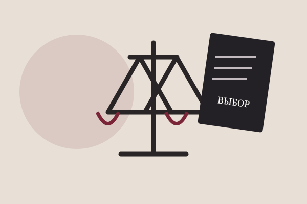

По результату
- Считать уменьшение преступности главным критерием.
- Сравнить общественную пользу и причинённый вред.
- Спросить, можно ли доверять оценку последствий одному человеку.
Лайт Ягами хочет создать мир без преступности. Его цель звучит как общественное благо, но средство требует личного решения о жизни и смерти каждого человека. Поэтому конфликт можно разложить на несколько уровней:
Противостояние Лайта и L — ещё и спор двух моделей порядка: власть одного убеждённого человека против процедуры поиска доказательств.

Миниатюра ниже является графической гиперссылкой. Нажмите на неё, чтобы открыть исходное изображение размером 600 × 400 пикселей в новой вкладке.